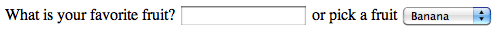
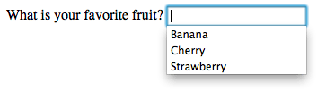

This article is in need of a technical review.
When building an HTML form, structuring it properly is an important step. It's important for two reasons: to guarantee that your form will be usable and to make it accessible (that is, usable by differently-abled people). Accessibility of HTML forms is a key point and we'll see how to make a form accessible. It's not difficult but there are a few tricks you'll need to know.
{kind=link}
HTML forms are one of the more complex structures in HTML due to their flexibility. By mixing dedicated form elements and attributes you can build any kind of basic form. That said, it's worth noting that some people have found HTML forms to be quite rough and simplistic. It's true that there are some richer form technologies such as XForms (now obsolete) but those kinds of forms are, unfortunately, not widely implemented by all browsers. Because of this, most of the time we rely on JavaScript to enhance HTML forms. In this article we'll cover in detail how to use all the HTML form elements. If you want to know more about building custom form widgets, you can read the article How to build custom form widgets.
Global structure
The <form> element
The <form> element is the element that formally defines a form, and its attributes define the way this form behaves. Each time you want to create an HTML form, you must start it by using this element. Many assistive technologies or browser plugins are able to discover <form> elements and can implement special hooks to make them easier to use.
The <form> element support the following attributes, all of which are optional:
| Attribute name | Default value | Description |
|---|---|---|
accept-charset |
UNKNOWN |
A space-delimited list of character encodings that the server accepts. The default value is the special string UNKNOWN, and in that case the encoding corresponds to the encoding of the document containing the form element. |
action |
The URI of a web page that processes the information submitted via the form. | |
autocomplete |
on |
Indicates whether widgets in this form can by default have their values automatically completed by the browser. This attribute can take two values: on or off. |
enctype |
application/x-www-form-urlencoded |
When the value of the method attribute is post, this attribute is the MIME type of content that is used to submit the form to the server. Possible values are:
|
method |
get |
The HTTP method that the browser uses to submit the form. This attribute can take two values: get or post. |
name |
The name of the form. It must be unique among the forms in a document and may not be an empty string. You should usually use the id attribute instead. |
|
novalidate |
(false) | This Boolean attribute indicates that the form is not to be validated when it is submitted. |
target |
_self |
A name or keyword indicating where to display the response that is received after submitting the form; this can be an <iframe>, tab, or window, for example. The following keywords are available as possible values for this attribute:
|
Note that it's always possible to use a form widget outside of a <form> element but if you do, that form widget has nothing to do with any form. It can be convenient to use such widgets outside of a form but it means that you have to have a special plan for such widgets, since they'll do nothing on their own. You'll have to customize its behavior with JavaScript.
Technically speaking, HTML5 introduces the form attribute on HTML form elements. It should let you explicitly bind an element with a form even if it's not actually enclosed within a <form>. Unfortunately, for the time being, the implementation of this feature across browsers is not yet good enough to rely on it.
The <fieldset> and <legend> elements
The <fieldset> element is a convenient way to create groups of widgets that share the same purpose. A <fieldset> element can be labeled with a <legend> element. The <legend> element formally describes the purpose of the <fieldset> element. Many assistive technologies will use the <legend> element as if it were part of the label of each widget inside the corresponding <fieldset> element. For example, some screen readers such as Jaws or NVDA will pronounce the legend's content before pronouncing the label of each widget.
Here is a little example:
<form> <fieldset> <legend>Fruit juice size</legend> <p> <input type="radio" name="size" id="size_1" value="small" /> <label for="size_1">Small</label> </p> <p> <input type="radio" name="size" id="size_2" value="medium" /> <label for="size_2">Medium</label> </p> <p> <input type="radio" name="size" id="size_3" value="large" /> <label for="size_3">Large</label> </p> </fieldset> </form>
With this example, a screen reader will pronounce "Fruit juice size small" for the first widget, "Fruit juice size medium" for the second, and "Fruit juice size large" for the third.
The use case in this example is one of the most important. Each time you have a set of radio buttons, you should be sure that they are nested inside a <fieldset> element. There are other use cases, and in general the <fieldset> element can also be used to strongly section a form. Because of its influence over assistive technology, the <fieldset> element is one of the key elements to building accessible forms; however it is your responsibility not to abuse it. If possible, each time you build a form, try to listen to how a screen reader interprets it. If it sounds odd, it's a good hint that your form structure need to be improved.
The <fieldset> element supports the following specific attributes:
| Attribute name | Default value | Description |
|---|---|---|
disabled |
(false) | If this Boolean attribute is set, the form controls that are its descendants (other than descendents of its first optional <legend> element) are disabled and not editable. They won't receive any browsing events, like mouse clicks or focus-related ones. Often browsers display such controls as gray. |
The <label> element
The <label> element is the formal way to define a label for an HTML form widget. This is the most important element if you want to build accessible forms.
The <label> element supports the following attributes:
| Attribute name | Default value | Description |
|---|---|---|
for |
The ID of a labelable widget in the same document as the <label> element. The first such element in the document with an ID matching the value of the for attribute is the labeled widget for this label element. |
A <label> element is bound to its widget with the for attribute. The for attribute actually references the id attribute of the corresponding widget. A widget can be nested inside its <label> element but even in that case, it is considered best practice to set the for attribute because some assistive technologies do not understand implicit relationships between labels and widgets.
Note that even without considering assistive technologies, having a formal label set for a given widget lets users to click on the label to activate the corresponding widget in all browsers. This is especially useful for radio buttons and checkboxes.
<form> <p> <input type="checkbox" id="taste_1" name="taste_cherry" value="1"> <label for="taste_1">I like cherry</label> </p> <p> <label for="taste_2"> <input type="checkbox" id="taste_2" name="taste_banana" value="1"> I like banana </label> </p> </form>
Some assistive technologies can have trouble handling multiple labels for a single widget. Because of this, you should nest a widget inside its corresponding element to build an accessible form.
Let's consider this example:
<form> <p>Required fields are followed by <strong><abbr title="required">*</abbr></strong>.</p> <!-- when the thing you are labeling is a descendant of the label, it is not necessary to use the 'for' attribute on the label. --> <!-- So this: --> <label> <span>Name: </span> <input type="text" name="username" required /> <strong><abbr title="required">*</abbr></strong> </label> <!-- is the same as this: --> <div> <label for="username">Name: </span> <input id="username" type="text" name="username" required /> <strong><abbr title="required">*</abbr></strong> </div> <p> <label for="birth"> <!-- so here, the 'for' attribute is redundant. --> <span>Date of birth: </span> <input type="text" id="birth" name="userbirth" maxlength="10" /> <em>formated as mm/dd/yyyy</em> </label> </p> </form>
In this example, the first paragraph defines the rule for required elements. It must be at the beginning to be sure that assistive technologies such as screen readers will display or vocalize it to the user before he finds a required element. That way, he always knows what he has to do.
The first field is required so its label element indicates both its name and the fact that it's a required field. That way, a screen reader will vocalize the label as "Name star" or "Name required" (this depends on the screen reader's settings but it's always consistent with what was vocalized in the first paragraph). If you used two labels, there would be no guarantee that the user would be informed that this element was required.
The second form element works similarly. By using this technique, you can be sure that the user is told how to format the date when entering it.
The <output> element
This element is used to store the output of a calculation. It formally defines a relationship between the fields used to get the data required to perform the calculation and an element to be used to display the results. It is also understood as a live region by some assistive technologies (which means that when the content of the <output> element changes, the assistive technology is aware of that change and can react to it).
The <output> element supports the following attributes:
| Attribute name | Default value | Description |
|---|---|---|
for |
A space-delimited list of IDs of other elements, indicating that those elements contribute input values to (or otherwise affect) the calculation. |
Common HTML structures used with forms
Beyond the structures specific to HTML forms, it's good to remember that forms are just HTML. This means that you can use all the power of HTML to structure an HTML form.
As you can see in the examples, It's common practice to wrap a label and its widget with a <p> or a <div> element.
In addition to the <fieldset> element, it's also common practice to use HTML titles and sectioning to structure a complex form.
HTML lists are also often used when using checkboxes and radio buttons.
Let's see an example with a simple payment form:
<form> <h1>Payment form</h1> <p>Required fields are followed by <strong><abbr title="required">*</abbr></strong>.</p> <section> <h2>Contact information</h2> <fieldset> <legend>Title</legend> <ul> <li> <label for="title_1"> <input type="radio" id="title_1" name="title" value="M." /> Mister </label> </li> <li> <label for="title_2"> <input type="radio" id="title_2" name="title" value="Ms." /> Miss </label> </li> </ul> </fieldset> <p> <label for="name"> <span>Name: </span> <input type="text" id="name" name="username" required /> <strong><abbr title="required">*</abbr></strong> </label> </p> <p> <label for="mail"> <span>E-mail: </span> <input type="email" id="mail" name="usermail" required /> <strong><abbr title="required">*</abbr></strong> </label> </p> </section> <section> <h2>Payment information</h2> <p> <label for="card"> <span>Card type:</span> <select id="card" name="usercard"> <option value="visa">Visa</option> <option value="mc">Mastercard</option> <option value="amex">American Express</option> </select> </label> </p> <p> <label for="number"> <span>Card number:</span> <input type="text" id="number" name="cardnumber" required /> <strong><abbr title="required">*</abbr></strong> </label> </p> <p> <label for="date"> <span>Expiration date:</span> <input type="text" id="date" name="expiration" required /> <strong><abbr title="required">*</abbr></strong> <em>formated as mm/yy</em> </label> </p> </section> <section> <p> <button>Validate the payment</button> </p> </section> </form>
See this form in action (with a touch of CSS):
| Live example |
|---|
| Check out the source code |
HTML widgets
When you build a form, you need to use some widgets to collect data from the user. In this article we will see how to display those widgets; if you want to know more about the way those widgets work, it is detailed in the article: The native form widgets.
The <input> element
This element is kind of special because it can be almost anything. By simply setting its type attribute, it can change radically. To make things a little simpler, the value of the type attribute can be categorized into four categories: single line text fields, controls without text input, time and date controls, and buttons. Because of this polymorphism, the <input> element supports many attributes but it can be difficult to know which are relevant and which are required because it depends on the value of the type attribute.
This is all summarized in the following table (for a full list of all attributes, visit the page for the <input> element):
| Value of the type attribute | Description | Required attributes | Relevant attributes |
|---|---|---|---|
| Single line text fields | |||
text |
This is the most basic text field. The value text for the type attribute is the default value of this attribute; no automatic validation is performed. |
autocomplete, list, maxlength, pattern, placeholder, readonly, required, size, spellcheck |
|
email |
A field for editing one or more e-mail addresses. | autocomplete, list, maxlength, multiple, pattern, placeholder, readonly, required, size |
|
password |
The value of this text field is obscured. | autocomplete, list, maxlength, readonly, required, size |
|
search |
A field for entering search strings. | autocomplete, autosave, list, maxlength, pattern, placeholder, readonly, required, size, spellcheck |
|
tel |
A field for editing a phone number. | autocomplete, list, maxlength, pattern, placeholder, readonly, required, size |
|
url |
A field for editing an absolute URL. | autocomplete, list, maxlength, pattern, placeholder, readonly, required, size |
|
| Controls without text input | |||
checkbox |
A checkbox. | checked, required |
|
color |
A control to specify a color. | autocomplete, list, required |
|
file |
A control that lets the user select a file. | accept, multiple, required |
|
hidden |
A control that is not displayed, but whose value is submitted to the server. | ||
number |
A control for entering a floating point number. | autocomplete, list, max, min, readonly, required, step |
|
radio |
A radio button; only one of these out of a given group may be selected. | checked, required |
|
range |
A control for entering a number whose exact value is not important. | autocomplete, list, max, min, required, step |
|
| Time and date controls
Not supported.
|
|||
date |
A control for entering a date (year, month, and day, with no time).
Unimplemented (see bug 825294)
|
autocomplete, list, max, min, readonly, required |
|
datetime |
A control for entering a date and time (hour, minute, second, and fraction of a second) based on UTC time zone.
Unimplemented (see bug 825294)
|
autocomplete, list, max, min, readonly, required |
|
datetime-local |
A control for entering a date and time, with no time zone.
Unimplemented (see bug 825294)
|
autocomplete, list, max, min, readonly, required |
|
month |
A control for entering a month and year, with no time zone.
Unimplemented (see bug 446510)
|
autocomplete, list, max, min, readonly, required |
|
time |
A control for entering a time value with no time zone.
Unimplemented (see bug 825294)
|
autocomplete, list, max, min, readonly, required |
|
week |
A control for entering a date consisting of a week-year number and a week number with no time zone.
Unimplemented (see bug 825294)
|
autocomplete, list, max, min, readonly, required |
|
| Buttons | |||
button |
A push button with no default behavior. | formaction, formenctype, formmethod, formnovalidate, formtarget |
|
image |
A graphical submit button. | src, alt |
width, height, formaction, formenctype, formmethod, formnovalidate, formtarget |
reset |
A button that resets the contents of the form to default values. | formaction, formenctype, formmethod, formnovalidate, formtarget |
|
submit |
A button that submits the form. | formaction, formenctype, formmethod, formnovalidate, formtarget |
|
If for some reason the value set in the type attribute is not supported by a browser, it renders the <input> element as if the value was text. This allows the form to work, even if not necessarily in an attractive way.
Although the <input> element is a powerful tool, it cannot do everything and there are a few other elements to handle those cases.
The <textarea> element
This element is dedicated to the multiline text field. It works exactly like a single line text field except it allows line breaks in the text typed by the user. It also accepts a few extra attributes to control its rendering across several lines:
| Attribute name | Default value | Description |
|---|---|---|
cols |
20 |
The visible width of the text control, in average character widths. |
rows |
The number of visible text lines for the control. | |
wrap |
soft |
Indicates how the control wraps text. Possible values are: hard or soft |
Note that the <textarea> element works a little bit differently from the <input> element. The <input> element is a self closing element, which means that it cannot contain any child elements. On the other hand, the <textarea> element is a regular element that can contain text content children.
This has two impacts:
- If you want to define a default value for an
<input>element, you have to use thevalueattribute, but for a<textarea>element, you put the default text between the starting tag and the closing tag of the<textarea>. - Because of its nature, the
<textarea>element only accepts text content; this means that any HTML content put inside a<textarea>element is rendered as if it was plain text content.
In the following example, the <textarea> elements will be rendered exactly the same:
<form> <p> <label for="text_1">With regular HTML</label><br> <textarea id="text_1" name="regular"><p>I'm a paragraphe</p></textarea> </p> <p> <label for="text_2">With escaped HTML</label><br> <textarea id="text_2" name="escaped"><p>I'm a paragraphe</p></textarea> </p> <p> <button>Send me</button> </p> </form>
The <select>, <option>, and <optgroup> elements
The <select> element lets you build select boxes (sometimes also known as combo boxes). A select box is a widget that lets a user choose one or more predefined values. The difference between a single value select box and a multiple value select box will be detailed in the article: The native form widgets.
Each value inside the select box is defined with an <option> element and those elements can be grouped inside <optgroup> elements.
Let's take an example:
<form> <p> <label for="myFruit">Pick a fruit</label> <select id="myFruit" name="fruit"> <!-- There is a trick here you think you'll pick a banana but you'll eat an orange >:-) --> <option value="orange">Banana</option> <option>Cherry</option> <optgroup label="berries"> <option>Blueberry</option> <option>Raspberry</option> <option>Strawberry</option> </optgroup> </select> </p> </form>
If an <option> element is set with a value attribute, that attribute's value is sent when the form is submitted. If the value attribute is omitted, the content of the <option> element is used as the select box's value.
On the <optgroup> element, the label attribute is displayed before the values, but even if it looks somewhat like an option, it is not selectable.
| Attribute name | Default value | Description |
|---|---|---|
label |
This attribute is the text of the label describing the option. If the label attribute isn't defined, its value is that of the element's text content. |
|
selected |
(false) | If present, this Boolean attribute indicates that the option is initially selected. |
| Attribute name | Default value | Description |
|---|---|---|
label |
The name of the group of options. This attribute is mandatory. |
The <datalist> element
This element extends the existing widgets by providing preset values for given widgets. The most known use case for this is an autocompletion list for text fields. The values available are set with <option> elements within the <datalist> element.
To bind a widget with a <datalist> element, you have to use the list attribute on the target widget; this specifies the id attribute of the <datalist> element to use with that widget.
The <datalist> element is a very recent addition to HTML forms, so there are still some browsers that don't support it. To handle this, here is a little trick to have a nice fallback for those browsers:
<form> <p> <label for="myFruit">What is your favorite fruit?</label> <input type="text" id="myFruit" name="fruit" list="fruitList" /> <datalist id="fruitList"> <label for="suggestion">or pick a fruit</label> <select id="suggestion" name="altFruit"> <option value="banana">Banana</option> <option value="cherry">Cherry</option> <option value="strawberry">Strawberry</option> </select> </datalist> </p> </form>
On the one hand, browsers that support the <datalist> element will ignore all the elements that are not <option> elements and will work as expected. On the other hand, browsers that do not support the <datalist> element will display the label and the select box. Of course, there are other ways to handle the lack of support for the <datalist> element, but that require the use of JavaScript which is not necessarily always a good option.
| Safari 6 |  |
|---|---|
| Firefox 18 |  |
The <meter> and <progress> elements
Those two elements are a way to graphically represent a given numeric value. The difference between the two elements is mainly semantic:
- The
<meter>element represents a static value and its relative position between a minimum and a maximum value. - The
<progress>element represents a changing value that moves over time between a minimum value and a maximum value. It's worth noting that changing the value (and thereby the displayed progress indicator) has to be done with JavaScript. The element itself does not have any mechanism to do it on its own.
Due to their nature, these elements support a set of specific attributes:
| Attribute name | Default value | Description |
|---|---|---|
min |
0 | The lower numeric bound of the measured range. |
max |
1 | The upper numeric bound of the measured range. |
low |
the min value |
The upper numeric bound of the low end of the measured range. |
high |
the max value |
The lower numeric bound of the high end of the measured range. |
optimum |
The optimal numeric value. |
| Attribute name | Default value | Description |
|---|---|---|
max |
This attribute describes how much work the task indicated by the <progress> element requires before it's complete. |
The <button> element
A <button> element is the easiest way to create a form button. A button can be one of three types, depending on the value of the type attribute:
- A submit button sends the form's data to the web page defined by the
actionattribute of the<form>element. - A reset button resets all the form widgets to their default values immediately. From a user experience point of view, using these buttons is now considered bad practice and should be avoided; it makes it far too easy for the user to accidentally lose all their work.
- An anonymous button has no inherent meaning; instead, you use JavaScript to give it a function.
| Attribute name | Default value | Description |
|---|---|---|
type |
submit |
The type of the button. Possible values are: button, reset, or submit |
formaction |
If the button is a submit button, the value of this attribute overrides the value of the action attribute on the <form> element. |
|
formenctype |
If the button is a submit button, the value of this attribute overrides the value of the enctype attribute on the <form> element. |
|
formmethod |
If the button is a submit button, the value of this attribute overrides the value of the method attribute on the <form> element. |
|
formnovalidate |
If the button is a submit button, the value of this attribute overrides the value of the novalidate attribute on the <form> element. |
|
formtarget |
If the button is a submit button, the value of this attribute overrides the value of the target attribute on the <form> element. |
Technically speaking, there is almost no difference between a button defined with the <button> element or the <input> element. The only noticeable difference is the label of the button itself. Within an <input> element, the label can only be character data, whereas in a <button> element, the label can be HTML, so it can be styled accordingly.
<button> element wasn't used very often and in many forms developers preferred to use buttons made with the <input> element. This is due to a bug in legacy versions of Internet Explorer (IE). In IE6 and IE7, if you add a name and a value attribute to a <button> element, they do not send the content of the value attribute but the raw content of the button instead. This has been fixed since IE8, so there is no longer any reason to avoid using the <button> element.Common attributes
Many of the elements used to define form widgets have some their own attributes. However, there is a set of attributes common to all form elements that give you some control over those widgets. Here is a list of those common attributes:
| Attribute name | Default value | Description |
|---|---|---|
autofocus |
(false) | This Boolean attribute lets you specify that the element should automatically have input focus when the page loads, unless the user overrides it, for example by typing in a different control. Only one form-associated element in a document can have this attribute specified. |
disabled |
(false) | This Boolean attribute indicates that the user cannot interact with the element. If this attribute is not specified, the element inherits its setting from the containing element, for example <fieldset>; if there is no containing element with the disabled attribute set, then the element is enabled. |
form |
The form element that the widget is associated with. The value of the attribute must be the id attribute of a <form> element in the same document. In theory, it lets you set a form widget outside of a <form> element. In practice, however, there is no browser which supports that feature. |
|
name |
The name of the element; this is submitted with the form data. | |
value |
The element's initial value. |
Using ARIA to structure HTML forms
ARIA is a W3C Candidate Recommendation which adds to HTML improved accessibility for rich Internet applications, including for forms. We will discuss its use in more detail in the "How to build custom form widgets" article, but there are some basics that are good to know.
Before going further, it's worth noting that support for ARIA and assistive technologies among browsers is far from perfect, but it's improving. Just to understand the issue, when a browser encounters an ARIA attribute, it has to send information to the operating system's accessibility layer. Not all browsers are good at doing this cross platform. The assistive technologies, on their own, have to connect themselves to the OS accessibility layer to handle the information that comes from the browsers. Surprisingly, not all assistive technologies do it well. So using ARIA does not mean that your web application will be accessible, but it means that you do your best to achieve this. Unfortunately, for the time being, ARIA remains a best effort technology, but it's always better than nothing.
If you want to dig into using ARIA with HTML forms, feel free to read the related section in the ARIA documentation.
The aria-labelledby attribute
This attribute is a convenient way to define a label without using the <label> element. The attribute is set on the widget element and references the id attribute of the element to use as a label.
<form> <p id="fruitLabel">What's your favorite fruit</p> <p> <input type="text" name="fruit" aria-labelledby="fruitLabel"> </p> </form>
Conceptually, it's the opposite of the for attribute on the <label> element. With the for attribute, you reference the id of the widget but with the aria-labbeldby attribute, you reference the id of the label.
The aria-describedby attribute
This attribute works like the aria-labelledby attribute. The difference is mainly semantic. A label defines the essence of an object, while a description provides more information that the user might need. This attribute is not advised for form elements, you should rely on the aria-labelledby attribute, except if you want to provide extensive information on the current form element. It is to be used as a provider for a longer description.
The aria-label attribute
This attribute is used when there is no explicit label in the DOM for a given widget. It lets you provide a widget that will be passed to assitive technologies without actually creating a DOM node for it.
<form> <p> <input type="search" name="q" aria-label="Search" /> <input type="submit" value="Go" /> </p> </form>
The role attribute
This is the most important ARIA attribute. It lets you give specific semantic information, understandable by assitive technologies, for a given HTML element. There are many roles available and some of them are dedicated to form widgets.
ARIA tries to provide semantics for widgets that are not currently available in HTML as well as for elements that already exist. We will see in detail how to use those roles in the article: How to build custom form widgets.
Those roles for form widgets are :
- Button
- Checkbox
- Progressbar
- Radio
- Slider
- Spinbutton
- textbox
It's also worth noting that there's something called a composite role:
- Listbox
- Radiogroup
If those roles are extremely useful, know that there are more; ARIA is a very large specification. Digging into it can help you improve accessibility in areas far afield from HTML forms.
Conclusion
You now have all the knowledge to properly structure your HTML forms; the next article will dig into implementation details and functional expectations: The native form widgets.